Рассмотрим несколько простейших задач по уже пройденным темам. Для этого нам потребуется минимальная математическая подготовка. В частности, уметь складывать, вычитать, умножать и делить, находить доли от чисел, уметь строить соотношения и выполнять элементарные тождественные преобразования.
Задачи, приведенные в данном уроке, достаточно легкие для восприятия и понимания. Потребуется только небольшая сноровка, чтобы понять каким из изученных инструментов воспользоваться для решения поставленной задачи. Изучить что-либо это одно дело, а вот применить на практике — другое.
Содержание урока- Запись выражений содержащих сложение и вычитание
- Запись выражений содержащих умножение и деление
- Определить стоимость, длину, массу, время, скорость
- Графическое описание задачи
- Нахождение НОД и НОК
- Перевод единиц измерения
- Задачи для самостоятельного решения
- Список сокращений
Запись выражений содержащих сложение и вычитание
Задача 1. В чашке для фруктов в которой лежало пять яблок, положили еще три яблока. Через некоторое время с чашки взяли два яблока. На чашке осталось шесть яблок. Записать выражение, описывающее это движение яблок.
Решение
\[5 + 3 - 2 = 6\]
Задача 2. На поле обработано 20 грядок моркови и 15 грядок свеклы. Итого обработано 35 грядок. Записать следующие выражения в которых содержатся сложение и вычитание:
- Выражение, описывающее сколько грядок обработано всего. Число отвечающее за общее количество грядок расположить в левой части равенства;
- Выражение, описывающее, что свеклы обработано на пять грядок меньше, чем моркови. Число отвечающее за свеклу расположить в левой части равенства;
- Выражение, описывающее, что моркови обработано на пять грядок больше, чем свеклы. Число отвечающее за морковь расположить в левой части равенства;
Решение
\[35 = 20 + 15\]
\[15 = 20 - 5\]
\[20 = 15 + 5\]
Задача 3. Автомобиль за 3 дня проехал 980 км. В пятницу и субботу он проехал 725 км. Сколько километров проезжал автомобиль в каждый из этих дней, если в субботу он проехал больше, чем в воскресенье на 123 км?
Решение
Узнáем сколько километров проехал автомобиль в воскресенье. Для этого из общего пути (980 км) вычтем путь который автомобиль проехал в пятницу и субботу (725 км)
980 − 725 = 255 км в воскресенье
В условии сказано, что в субботу автомобиль проехал на 123 км больше, чем в воскресенье. Поэтому к пути, который автомобиль проехал в воскресенье (255 км) нужно прибавить 123 км. Так мы получим путь, который автомобиль проехал в субботу
255 + 123 = 378 км в субботу
Теперь узнаем сколько километров автомобиль проехал в пятницу. Для этого вычтем из общего пути (980) те пути, которые автомобиль проехал в субботу и воскресенье. Для удобства эти два пути можно сложить и полученный результат вычесть из 980
980 − (378 + 255) = 980 − 633 = 347 км в пятницу
Теперь проверим, правильно ли решена задача. Для этого сложим все пути и посмотрим равна ли сумма 980 км
\[347 + 378 + 255 = 980\]
\[980 = 980\]
Задача 4. За три рабочие смены фабрика изготовила 1680 метров ткани. Первая и вторая смены изготовили вместе 970 метров ткани, вторая и третья — 1060 метров. Сколько метров ткани изготовила каждая смена?
Решение
Узнаем сколько метров ткани изготовила первая смена. Для этого вычтем из общего количества метров то количество, которое изготовила вторая и третья смены (1060м)
1680 − 1060 = 620м (изготовила первая смена)
Узнаем сколько метров ткани изготовила третья смена. Для этого вычтем из общего количества метров то количество, которое изготовила первая и вторая смены (970м)
1680 − 970 = 710м (изготовила третья смена)
Узнаем сколько метров ткани изготовила вторая смена. Для этого вычтем из общего количества метров то количество, которое изготовила первая и третья смены (620м и 710м). Для удобства эти два количества можно сложить и полученный результат вычесть из 1680
1680 − (620 + 710) = 1680 − 1330 = 350м (изготовила вторая смена)
Проверим правильно ли решена задача. Для этого сложим все количества и посмотрим равна ли сумма 1680м
\[620 + 350 + 710 = 1680\]
\[1680 = 1680\]
Задача 5. Имеется следующее равенство
\[5 + 5 + 2 = 8 + 4\]
Обе части равенства (и левая и правая) равны 12. Прибавим к левой части равенства число 3
5 + 5 + 2 + 3 ≠ 8 + 4
Равенство сразу нарушилось. Левая часть не равна правой части, поскольку левая часть теперь равна 15, а правая 12. Чтобы сохранить равенство, прибавим к правой части равенства число 3
\[5 + 5 + 2 + 3 = 8 + 4 + 3\]
Знак «неравно» исчез. Теперь к числу 4, которое располагается в правой части равенства прибавим единицу
5 + 5 + 2 + 3 ≠ 8 + (4 + 1) + 3
Равенство снова нарушилось. Левая часть не равна правой части, поскольку правая часть теперь равна 16, а левая 15.
Попробуем снова «восстановить справедливость» между левой и правой частью. Для этого можно прибавить единицу к левой части. Но можно также вычесть единицу из любого числа, располагающегося в правой части. Давайте не трогая левую часть, вычтем единицу из числа 8, которое в правой части:
\[5 + 5 + 2 + 3 = (8 - 1) + (4 + 1) + 3\]
Задача 6. На сколько единиц число 78 больше, чем число 63?
Решение
Вычтем из 78 число 63
\[78 - 63 = 15\]
Число 78 больше числа 63 на 15 единиц.
Задача 7. На сколько единиц число 88 меньше числа 105
Решение
Вычтем из 105 число 88
\[105 - 88 = 17\]
Число 88 меньше числа 105 на 17 единиц
Задача 8. На сколько число 65 больше, чем число 48 и меньше чем число 95
Решение
Вычтем из 65 число 48
\[65 - 48 = 17\]
Вычтем из 95 число 65
\[95 - 65 = 30\]
Число 65 больше числа 48 на 17 единиц, и меньше числа 95 на 30 единиц.
Запись выражений содержащих умножение и деление
Задача 1. В три коробки поровну разложили 90 чашек. В результате в каждой коробке оказалось 30 чашек. Записать выражение, которое описывает, что 90 чашек разложено в 3 коробки. Далее выполнить действие в этом выражении.
Решение
90 : 3
\[90 : 3 = 30\]
\[30 = 30\]
Задача 2. В коробки упаковали 60 тарелок по 6 тарелок в каждую. В результате получилось 10 коробок. Записать выражение, которое описывает, что 60 тарелок разложено в коробки по 6 тарелок в каждую. Далее выполнить действие в этом выражении.
Решение
60 : 6
\[60 : 6 = 10\]
\[10 = 10\]
Задача 3. Имеется 10 коробок с тарелками. В каждой по 6 тарелок. Если расфасовать все коробки, получается 60 тарелок. Записать выражение, которое описывает, что в результате расфасовки всех коробок получается 60 тарелок.
Решение
6 × 10 = 60 тарелок
Здесь следует сделать небольшое замечание. При построении выражения, содержащего произведение, желательно заранее разобраться, что будет множимым, а что множителем. По традиции сначала записывают мнóжимое, а потом мнóжитель.
Например, если нужно увеличить число 2 в три раза, то нужно записывать 2 × 3. В этом выражении мнóжимым является число 2, а мнóжителем число 3.
В условии задачи было сказано, что после расфасовки получилось 60 тарелок. Значит конечной целью является получение этих сáмых 60 тарелок. А их можно получить путём увеличения шести тарелок в десять раз. То есть умножить 6 на множитель 10. Значит роль мнóжимого играют тарелки, а роль мнóжителя — коробки. В результате получим тарелки, количество которых будет увеличено в 10 раз от изначального.
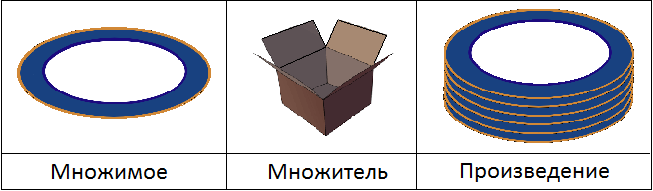
Не следует думать, что на рисунке представлены все 60 тарелок. Это всего лишь модель, описывающая что в результате умножения получаются тарелки, а не коробки.
Конечно, от перестановки мест сомножителей произведение не меняется, но если поставить число 10 на первое место, а число 6 на второе, то получится выражение 10 × 6. В этом выражении роль мнóжимого играют коробки, а роль мнóжителя — тарелки. Тогда получится не 60 тарелок, а 60 коробок, что будет нарушать логику задачи:
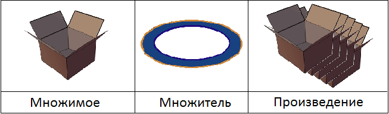
Как и с предыдущим рисунком, не следует думать, что на нем представлены все 60 коробок, получающиеся в результате умножения. Это всего лишь модель, описывающая что в результате умножения получаются коробки, а не тарелки.
Как было сказано выше, от перестановки мест сомножителей произведение не меняется, и мы можем записывать сомножители в любом порядке, поскольку ответ к задаче не поменяется. Тем не менее, слежение за порядком сомножителей позволяет хорошо осмыслить задачу и понять её суть.
С другой стороны, традиция записывать множимое первым, сохранилась наверное только в нашей стране. В большинстве других стран сначала записывают множитель, а затем множимое. И это даже правильнее с точки зрения настоящей математики.
Например, если нам встретится запись 5 см, то мы читаем «пять сантиметров», а не «сантиметров пять». Пятерка в данном случае является множителем — числом, которым увеличивают один сантиметр в пять раз. Под сокращением «см» подразумевается 1 сантиметр:
5 см = 5 × 1 см
В повседневном общении мы часто употребляем произведение, порой не замечая этого. И произносим мы сначала множитель, а затем множимое. Примеры: «пять конфет», «сто рублей», «десять тюльпанов». Мы не говорим «конфет пять», «рублей сто», «тюльпанов десять».
Вспомните урок «Буквенные выражения». Этот урок являлся базовым для изучения алгебры. В нем мы затронули понятия коэффициента — множителя, стоящего перед переменной. Этот коэффициент мы записывали раньше переменной, например 3a, 2x, 7y. Мы не записывали a3, x2, y7. Первая запись правильнее, и она более аккуратнее и красивее с точки зрения эстетики. В последствии, при изучении алгебры и высшей математики, вы чаще будете замечать, что множитель стоит на первом месте.
Большинство учителей, воспитанных по советским учебникам, скорее всего снизят вам оценку, если вы будете записывать сначала множитель, а затем множимое. При решении задач, дабы избежать нападок со стороны этих учителей и других педагогов, советуем пользоваться старой схемой умножения: множимое × множитель = произведение. А в последствии переходя к алгебре, множитель можно записывать раньше.
Задача 4. В тетради 18 листов. Сколько можно сделать тетрадей из 54 таких же листов?
Решение
18 листов это одна тетрадь. Чтобы узнать сколько таких тетрадей можно сделать из 54 листов, нужно эти 54 листа сгруппировать по 18 листов. Для этого необходимо разделить 54 на 18. Это позволяет узнать сколько тетрадей можно сделать из 54 листов:
54 : 18 = 3 тетради
Задача 5. Суммарно (вместе) в нескольких одинаковых тетрадях 72 листа. Каждая тетрадь имеет 18 листов. Запишите выражение, позволяющее узнать сколько всего тетрадей имеется.
Решение
Если в одной тетради 18 листов, то для того чтобы узнать сколько таких же 18 листов (целых тетрадей) в 72 листах, нужно 72 разделить на 18
72 : 18 = 4 (тетради)
Задача 6. Суммарно (вместе) в трёх одинаковых тетрадях 75 листов. Сколько листов в одной тетради?
Решение
Тетради все одинаковые. Если разделить 75 на количество тетрадей, то есть на 3, мы узнаем сколько листов приходится на одну тетрадь:
75 : 3 = 25 листов
Задача 7. Отцу 46 лет, сыну 23 года. Отец вдвое старше сына. Записать выражение которое описывает, что отец вдвое старше сына.
Решение
Записываем возраст отца и через знак равенства пишем, что возраст отца вдвое больше возраста сына:
\[46 = 23 \times 2\]
Выполним действие в правой части равенства, чтобы удостовериться в правильности выражения — значок равенства должен оправдывать свое положение:
\[46 = 23 \times 2\]
\[46 = 46\]
Задача 8. Маме 36 лет, дочери 12 лет. Дочь младше матери в три раза. Записать выражение, описывающее что дочь втрое младше матери.
Решение
Записываем возраст дочери и через знак равенства пишем, что она младше матери в три раза
\[12 = 36 : 3\]
Выполним действие в правой части равенства — получим тождество:
\[12 = 12\]
Определить стоимость, длину, массу, время, скорость
Задача 1. Девять блокнотов стоят 162 рубля. Сколько стоят пять таких же блокнотов?
Чтобы решать подобные задачи, сначала нужно определить стоимость одной единицы товара. Далее воспользоваться умножением и определить стоимость нескольких единиц товара. В данном случае 162 рубля нужно поровну раскидать на 9 блокнотов. Так мы узнáем сколько стóит один блокнот:
162 : 9 = 18 руб.
Получили стоимость одной единицы товара. То есть стоимость одного блокнота составляет 18 рублей. Далее, чтобы узнать стоимость пяти таких же блокнотов, нужно 18 умножить на множитель 5
18 × 5 = 90 руб.
Задача 2. Восемь журналов стоят 176 рублей. Определить сколько журналов можно купить на 66 рублей.
Определим стоимость одного журнала. Для этого разделим общую цену 176 рублей на восемь журналов:
176 : 8 = 22 руб.
22 рубля — стоимость одного журнала. Определим сколько журналов можно купить на 66 рублей. Для этого узнаем сколько раз 66 рублей содержит по 22 рубля. Другими словами, разделим 66 рублей на стоимость одного журнала:
66 : 22 = 3 журнала.
Задача 3. Из 6 рулонов ткани сшили 3 рубашки. Определить сколько рулонов пошлó на одну рубашку
Решение
Чтобы определить сколько рулонов пошлó на одну рубашку, нужно 6 рулонов разделить на сшитое количество рубашек, то есть на 3
\[6 : 3 = 2\]
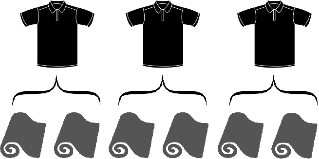
Задача 4. Из 15 метров тюля сшили 5 занавесок. Определить сколько занавесок можно сшить из 42 метров тюля.
Решение
Узнáем сколько метров тюля уходит на шитье одной занавески. Для этого разделим 15 метров на количество сшитых занавесок, то есть на 5
15 : 5 = 3 метра
Три метра уходит на шитье одной занавески. Чтобы узнать сколько занавесок можно сшить из 42 метров тюля, нужно эти 42 метра разделить на 3 метра
42 : 3 = 14 занавесок
Задача 5. Из 3 кг муки испекли 6 булок хлеба. Определить сколько булок можно испечь из 30 кг муки.
Решение
Узнáем сколько килограммов муки уходит на одну булку хлеба. Для этого разделим 3 килограмма на 6 булок
3 : 6 = 0,5 кг на булку
На одну булку уходит 0,5 кг муки. Узнаем сколько булок можно получить из 30 кг муки. Для этого 30 кг разделим на 0,5
30 : 0,5 = 60 булок
Задача 6. Куплено 5 одинаковых пакетов с картофелем, общая масса которых 15 кг. Определить массу одного пакета
Решение
15 : 5 = 3 кг
Задача 7. Отец купил 5 одинаковых пакетов с картофелем, общая масса которых 20 кг. Сын помог отцу донести 2 пакета. Сколько килограммов картофеля нёс сын?
Решение
Масса одного пакета:
20 кг : 5 = 4 кг
Масса пакетов, которые нес сын:
4 кг × 2 = 8 кг.
Задача 8. Скорость вертолета 250 км/ч, а скорость самолета в 4 раза больше. Определить скорость самолета.
Решение
Если скорость самолета в 4 раза больше скорости вертолета, достаточно умножить скорость вертолета на 4. Так мы получим скорость самолета:
250 км/ч × 4 = 1000 км/ч
Задача 9. На поезде за 6 часов проехали 390 км, каждый час поровну. Определить сколько километров проезжали на этом поезде за 1 час.
Решение
Чтобы определить сколько километров поезд проезжал за один час, достаточно 390 разделить на 6, понимай раскидать поровну расстояние на затраченное время:
390 км : 6 = 65 км каждый час
Задача 10. Тюльпан стоит 25 рублей. Какое наибольшее число тюльпанов можно купить на 160 рублей?
Решение
Разделим 160 на 25
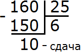
На 160 рублей можно купить максимум 6 тюльпанов, плюс останется сдача в 10 рублей.
Графическое описание задачи
Некоторые задачи полезно описáть графически в виде схем, рисунков или таблиц. Это позволяет быстрее найти решение и понять суть задачи. Бывают также задачи, которые трудно решить, если перед глазами нет её графического представления.
Графическое описание задачи это творческий процесс и здесь всё зависит от вашей фантазии.
Решим несколько простейших задач, которые можно описáть с помощью рисунков.
Задача 1. В мастерской было 2 куска материи длиной 96 метров и 84 метра. Из них сшили пальто. Из второго куска вышло на 3 пальто меньше, чем из первого куска. Сколько пальто сшито из каждого куска?
Решение
Сначала нужно узнать сколько метров материи расходуется на одно пальто. Узнав это число, мы смогли бы разделить на это число 96 метров и 84 метра, и таким образом узнать сколько пальто сшито из каждого куска. Но как это сделать?
Узнáем на сколько 96 метров больше, чем 84 метра. Для этого из 96 вычтем 84
96 м − 84 м = 12 м
96 метров больше, чем 84 метра на 12 метров. В условии задачи сказано, что из второго куска вышло на 3 пальто меньше, чем из первого куска. Это значит, что из первого куска наоборот вышло на три куска больше, чем из второго. На эти три пальто приходятся найденные нами 12 метров материи. Если мы разделим 12 метров на эти 3 пальто, то узнаем сколько метров материи расходуется на одно пальто:
12 : 3 = 4 метра на одно пальто
Теперь можно узнать сколько пальто сшито из каждого куска материи. Для этого поочередно разделим числа 96 и 84 на 4 метра
96 : 4 = 24 пальто из первого куска
84 : 4 = 21 пальто из второго куска
Можно сделать проверку, действительно ли из второго куска вышло на 3 пальто меньше, чем из первого куска. Вычтем из 24 число 21
\[24 - 21 = 3\]
Эту задачу можно изобразить графически. Представим 96 метров и 84 метра в виде двух линий — вторая короче первой:
Нарисуем красную линию поверх этих двух линий так, чтобы эта линия пересекла 96 метров на участке где заканчиваются 84 метра:
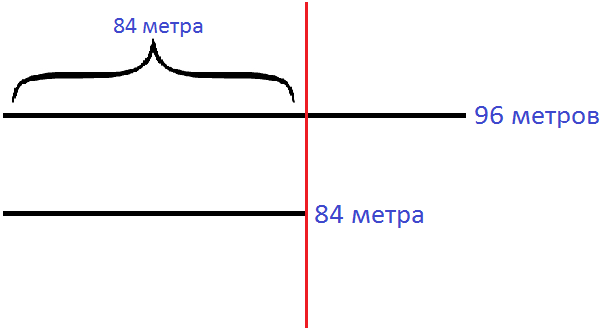
Теперь на первом куске материи после красной линии нарисуем три пальто. Ведь из первого куска материи вышло на 3 пальто больше:
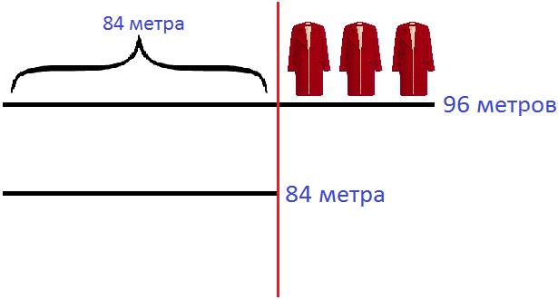
Ну а дальше при внимательном рассмотрении рисунка можно понять, что нужно сделать. Остаток первой материи (после красной линии) нужно поровну разделить на 3 пальто и тем самым получить число метров, расходуемых на одно пальто. Остаток первой материи (после красной линии) можно найти путем вычитания из 96 метров 84 метра.
Теперь решать задачу намного удобнее. 12 метров делят на 3 пальто и определяют сколько метров материи расходуется на одно пальто.
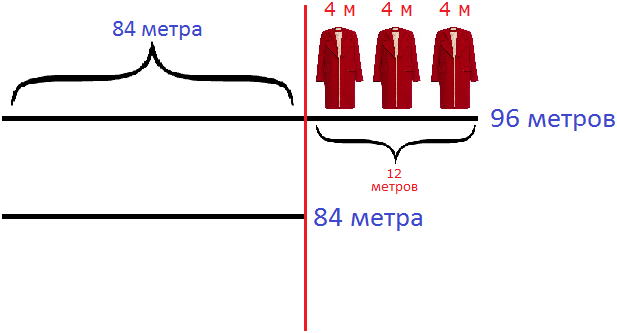
Затем оба куска материи делят на 4 и определяют сколько пальто сшито из каждого куска.
Задача 2. За 4 часа теплоход прошел 136 км. Сколько километров он пройдет за 8 часов, двигаясь с той же скоростью?
Решение
Найдем скорость теплохода. Вспоминаем, что скорость это расстояние пройденное телом (человеком, машиной, теплоходом) за 1 час, 1 минуту или 1 секунду. Чтобы найти скорость, нужно пройденное расстояние разделить на время движения:
136 : 4 = 34 км/ч
Значит за один час теплоход проходит 34 километра. В задаче сказано, что теплоход двигается с одинаковой скоростью. Это позволяет нам узнать сколько таких 34 километра он пройдет восемь раз (за 8 часов)
34 км × 8 = 272 км
К этой задаче также можно сделать рисунок. Особенно он полезен был бы в случае, если вспомнить что такое скорость так и не удалось.
Нарисуем 136 километров в виде линии:
Сверху над этой линией нарисуем четыре линии, которые будут изображать 4 часа. Они в свою очередь будут нам подсказывать сколько километров теплоход проходит в течении часа
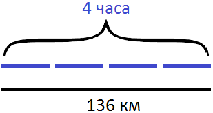
Поскольку скорость теплохода одинаковая в каждом часе, мы можем дорисовать еще 4 часа, тем самым делая себе подсказку с пройденным расстоянием:
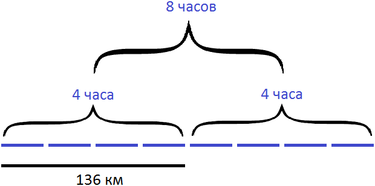
Внимательное рассмотрение рисунка позволяет понять, что расстояние увеличилось в два раза. Мы можем записать произведение 136×2 равное 272 километрам. Можем также дорисовать нижнюю линию, изображающую пройденное расстояние:
136 × 2 = 272 км
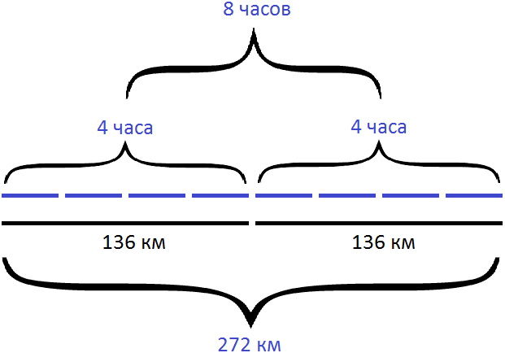
Задача 3. Путь от одной станции до другой товарный поезд прошел за 9 часов, а пассажирский за 6 часов. Чему равна скорость пассажирского поезда, если скорость товарного поезда равна 40 км/ч?
Решение
Вопрос задачи состоит в том, чтобы найти скорость пассажирского поезда. Чтобы найти скорость пассажирского поезда, нужно пройденное им расстояние разделить на время его движения. Но дело в том, что пройденное расстояние нам неизвестно. Известно лишь его время движения — 6 часов.
Зато в задаче есть подсказка, что товарный поезд прошел то же самое расстояние за 9 часов и его скорость была 40 км/ч. Это позволяет нам узнать расстояние между станциями. Если за один час товарный поезд проходит 40 километров, то за 9 часов он прошел в девять раз больше:
40 км × 9 = 360 км.
Теперь нам известно расстояние между станциями. Оно равно 360 километрам. Это позволяет без проблем найти скорость движения пассажирского поезда. Напомним, что для этого нужно пройденное расстояние (360км) разделить на время движения пассажирского поезда (6ч)
360 : 6 = 60 км/ч
Нарисуем схему к данной задаче. В первую очередь изобразим время движения товарного поезда в виде девяти линий. Эти же линии будут изображать сколько километров товарный поезд проходит в течении часа:
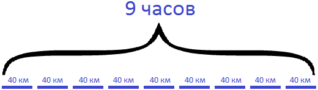
Ниже этих линий нарисуем сплошную линию, которая будет изображать пройденное этим поездом расстояние
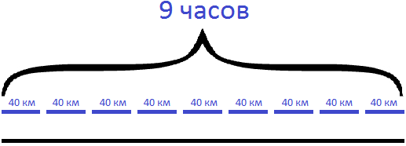
Ниже от сплошной линии, изображающей расстояние, нарисуем шесть линий, которые изображают время движения пассажирского поезда:
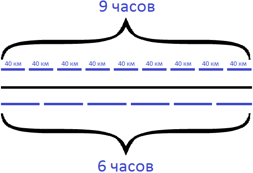
Если внимательно посмотреть на получившийся рисунок, можно понять, что делать дальше. Можно сложить все расстояния, пройденные товарным поездом в течении девяти часов движения (40 км в каждом часе) и получить длину всего пути. Далее полученный путь разделить на время движения пассажирского поезда (6 часов) и получить скорость его движения.
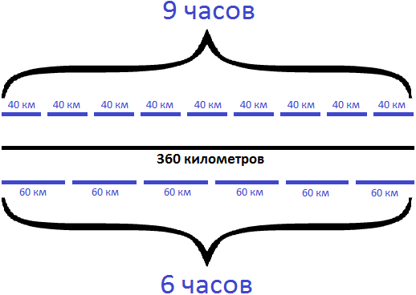
Задача 4. В школе-интернате, имеющей 250 воспитанников, запасено 22500 кг картофеля на 180 дней. На сколько дней сделан запас картофеля в другой школе-интернате, если при той же норме на 160 воспитанников запасено 9600 кг картофеля?
Решение
Сначала разберемся с первой школой. В ней 250 воспитанников. Для них запасено 22500 кг картофеля на 180 дней. Сделаем рисунок к задаче в виде таблицы. Таблицы это еще один полезный инструмент, который позволяет упорядочить данные в задаче и быстрее найти решение к ней
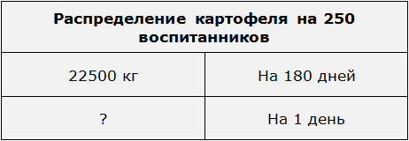
Определим сколько килограммов картофеля приходится на один день. Для этого разделим 22500 кг на 180 дней
22500 кг : 180 д = 125 кг на один день
Дополним нашу таблицу новым значением. Вместо вопросительного знака вставим найденные 125 килограммов, которые приходятся на один день
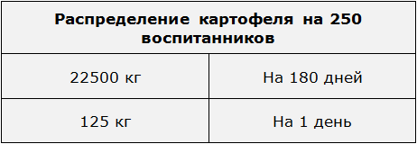
Итак, в день 250 воспитанникам выделяется 125 килограммов картофеля.
Определим сколько килограммов картофеля приходится на одного воспитанника в день. Для этого 125 килограммов разделим на 250 воспитанников
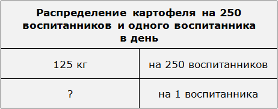
125 кг : 250 в = 0,5 кг в день на одного воспитанника
Дополним нашу таблицу новым значением. Вместо вопросительного знака вставим найденные 0,5 килограммов, которые приходятся на одного воспитанника в день
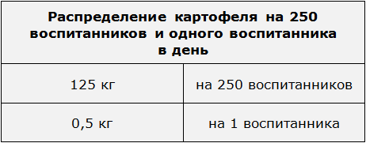
Итак, 0.5 кг это масса картофеля, выделяемого на одного воспитанника в день. Эта же масса является нормой картофеля на одного воспитанника в день
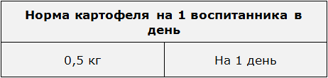
В задаче сказано, что во второй школе при этой же норме выделено 9600 кг картофеля на 160 воспитанников. Если мы умножим 0,5 килограммов картофеля на 160 воспитанников, то узнаем сколько килограммов картофеля приходится на 160 воспитанников в день
0,5 кг × 160 в = 80 кг картофеля на 160 воспитанников
А если мы разделим 9600 килограммов на 80 килограммов, то узнаем на сколько дней хватит выделенного картофеля во второй школе. То есть получим ответ к задаче, узнав на сколько дней сделан запас картофеля во второй школе-интернате
9600 кг : 80 кг = 120 дней
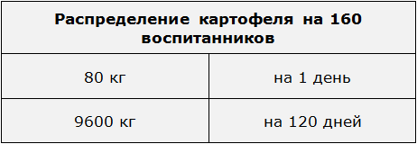
Нахождение НОД и НОК
Задача 1. Имеется 42 конфеты. Записать следующие выражения, содержащие деление:
- Выражение в котором 42 конфеты разделены на 2 детей;
- Выражение в котором 42 конфеты разделены на 3 детей;
- Выражение в котором 42 конфеты разделены на 7 детей;
- Выражение в котором 42 конфеты разделены на 14 детей;
- Выражение в котором 42 конфеты разделены на 21 детей;
- Выражение в котором 42 конфеты разделены на 42 детей;
Решение
- 42 : 2 = 21
- 42 : 3 = 14
- 42 : 7 = 6
- 42 : 14 = 3
- 42 : 21 = 2
- 42 : 42 = 1
Задача 2. На улице играются трое детей. У нас имеются 24 конфеты марки «ласточка» и 18 конфет марки «буревестник». Нужно раздать эти конфеты детям так, чтобы каждому досталось конфет поровну.
Решение
Сначала разделим 24 конфеты марки «ласточка» на троих детей:
24 : 3 = 8 (конфет марки «ласточка» каждому ребенку)
Далее разделим 18 конфет марки «буревестник» на тех же троих детей:
18 : 3 = 6 (конфет марки «буревестник» каждому ребенку)
Каждому ребенку досталось 8 конфет марки «ласточка» и 6 конфет марки «буревестник».
Задача 3. Имеется 24 конфеты марки ласточка и 18 конфет марки буревестник. Какое наибольшее число одинаковых подарков можно составить из этих конфет?
Решение
Эта задача похожа на предыдущую. В предыдущей мы разделили эти конфеты на троих детей. Но эти конфеты могли быть разделены не только на троих, но и на двоих, четверых, шестерых.
В данном случае, вопрос состоит в том, чтобы определить наибольшее число детей на которых можно было бы разделить эти конфеты. При этом разделить так, чтобы каждому ребенку досталось конфет поровну и чтобы у нас ничего не осталось.
В таких случаях нужно находить наибольший общий делитель (НОД) двух чисел — в нашем случае чисел 24 и 18. Напомним, что НОД это наибольшее число, на которое оба числа делятся без остатка. А это то, что нам нужно.
Найдем НОД чисел 24 и 18
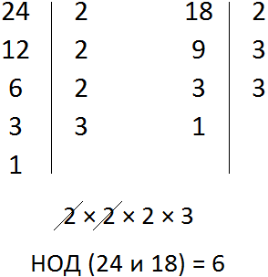
Значит из 24 конфет марки ласточка и 18 конфет марки буревестник можно составить 6 одинаковых подарков.
Мы можем раскидать (разделить) конфеты каждой марки на шесть подарков и узнать сколько конфет каждой марки будет в каждом подарке:
24 : 6 = 4 (конфеты марки «ласточка»)
18 : 6 = 3 (конфеты марки «буревестник»)
В каждом подарке будет 4 конфеты марки ласточка и 3 конфеты марки буревестник.
Задача 4. Имеется 60 яблок и 40 груш. Какому наибольшему количеству детей можно поровну раздать эти фрукты? Сколько яблок и груш получит каждый ребенок?
Решение
Дети в данном случае являются наибольшем общим делителем. Наша задача найти этот НОД, чтобы раздать поровну 60 яблок и 40 груш.
Наибольшим общим делителем чисел 60 и 40 является число 20. Значит 60 яблок и 40 груш могут быть поровну розданы 20 детям.
Раздадим 60 яблок:
60 : 20 = 3 (яблока каждому ребенку)
Раздадим 40 груш:
40 : 20 = 2 (груши каждому ребенку)
Каждый ребенок получил три яблока и две груши.
Задача 5. Материал ткани продается по 3 метра либо по 4 метра. Какое наименьшее число метров должно быть в рулоне, чтобы материал можно было продать без остатка?
Решение
Чтобы продать материал без остатка, число его метров должно без остатка делится на 3 и на 4 метра. Мы знаем, что число которое без остатка делится на оба числа, называется наименьшим общим кратным эти чисел. В этой задаче именно этот случай. Чтобы ответить на вопрос задачи, нужно найти НОК чисел 3 и 4.
НОК чисел 3 и 4 равен 12. Значит наименьшее число метров материала должно быть 12, чтобы его можно было продать без остатка.
Задача 6. Маленькая коробка вмещает 24 карандаша, а большая 30 карандашей. Определить наименьшее число карандашей, которые могут быть разложены, как в маленькие коробки, так и в большие.
Решение
Наименьшее общее кратное чисел 24 и 30 равно 120. Значит 120 карандашей могут быть разложены, как в маленькие коробки, так и в большие.
В случае, если мы разложим 120 карандашей в маленькие коробки, нам потребуется 5 маленьких коробок:
\[120 : 24 = 5\]
В случае, если мы разложим 120 карандашей в большие коробки, нам потребуется 4 большие коробки:
\[120 : 30 = 4\]
Перевод единиц измерения
Задача 1. Выразить 3 минуты в секундах.
В одной минуте 60 секунд, а в трех минутах 180 секунд:
60 × 3 = 180 (секунд)
3 минуты = 180 секунд
Задача 2. Выразить 10 минут в секундах.
В одной минуте 60 секунд, а в десяти минутах 600 секунд:
60 × 10 = 600 (секунд)
10 минут = 600 секунд
Задача 3. Выразить 8 минут в секундах.
В одной минуте 60 секунд, а в восьми минутах 480 секунд:
60 × 8 = 480 (секунд)
8 минут = 480 секунд
Задача 4. Выразить 2 минуты и 3 секунды в секундах.
Две минуты это 120 секунд плюс 3 секунды, которые никуда переводить не нужно:
\[60 \times 2 = 120\]
120 + 3 = 123 (секунды)
2 мин 3 с = 123 с
Задача 5. Выразить 15 минут и 47 секунд в секундах.
15 минут это 900 секунд плюс 47 секунд, которые никуда переводить не нужно:
60 × 15 = 900 секунд
900 + 47 = 947 секунд
15 мин 47 с = 947 с
Задача 6. Выразить 3 центнера и 45 килограмм в килограммах.
Сначала переведем 3 центнера в килограммы. Один центнер составляет 100 килограмм, а три центнера составляют 300 килограмм. Плюс у нас имеется еще 45 килограмм. Поэтому нужно сложить 300 и 45. В итоге получим 345 килограмм:
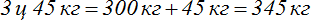
Задача 7. Выразить 4 килограмма и 654 грамма в граммах
Сначала переведем 4 килограмма в граммы. 1 килограмм составляет 1000 грамм, а 4 килограмма составляют 4000 грамм. Плюс у нас имеется еще 654 грамма. Поэтому нужно сложить 4000 и 654. В итоге получим 4654 грамма:
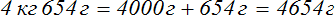
Задача 8. Выразить 20 секунд в минутах. Ответ записать в виде обыкновенной дроби:
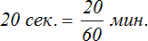
Выражение
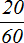
означает, что минута разделена на 60 равных частей (на 60 секунд), и из этих частей взято 20 частей.Задача 9. Выразить 15 секунд в минутах. Ответ записать в виде обыкновенной дроби:
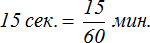
Задача 10. Выразить 45 минут в часах. Ответ записать в виде обыкновенной дроби:
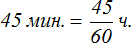
Выражение
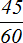
означает, что час разделен на 60 частей, и из этих 60 частей взято 45 частей. А 45 частей из 60 составляет 45 минут.Задача 11. Масса лошади 500 кг. Выразить эту массу в тоннах. Ответ записать в виде обыкновенной дроби:
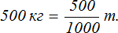
Задача 12. Записать 6 минут и 15 секунд в виде смешанного числа
6 минут это целая часть смешанного числа. 15 секунд это пятнадцать секунд из шестидесяти секунд, поэтому
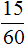
будет дробной частью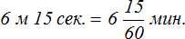
Задача 13. Записать 43 метра и 5 сантиметров в виде смешанного числа
43 метра это целая часть смешанного числа. 5 сантиметров это пять сантиметров из ста сантиметров, поэтому \(\frac{5}{100}\) будет дробной частью смешанного числа:
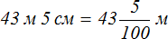
Задача 14. К 6 ц 87 кг прибавить 2 ц 45 кг
Запишем задание в виде выражения:
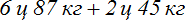
Для удобства переведем данные величины в килограммы, получим 687 кг и 245 кг. Сложим эти килограммы, получим 932 кг. Затем распишем центнеры и остатки килограмм по отдельности:
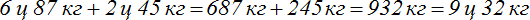
Второй способ с помощью смешанных чисел:
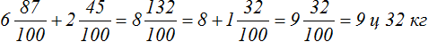
Задача 15. Найти значение следующего выражения:
Решение
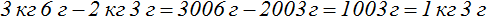
Решим эту задачу с помощью смешанных чисел:
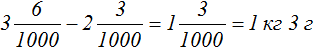
Вычитание смешанных чисел было выполнено следующим образом: целые части были вычислены отдельно от дробных. Так, от трех вычесть два получилась единица, которая стала целой частью получившегося смешанного числа. Значение выражения
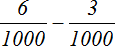
стало равно дроби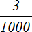
, которая стала дробной частью смешанного числа.Но выражение
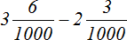
могло быть вычислено путем перевода смешанных чисел в неправильные дроби. Выглядело бы это решение следующим образом: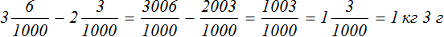
Конечно это решение выглядит более громоздким, чем первое решение. Первое выглядит намного короче и аккуратнее:
Но надо иметь ввиду, что при решении подобных задач иногда случается так, что дробная часть уменьшаемого оказывается меньше дробной части вычитаемого. В таком случае, целесообразнее искать обходные пути, чтобы сделать решение более короче. В противном случае, задача может разрастись на половину листа.
Задача 16. Найти значение следующего выражения:
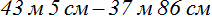
Решение
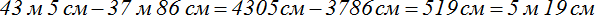
Теперь попробуем решить эту задачу с помощью смешанных чисел
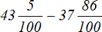
Мы видим, что дробная часть уменьшаемого меньше дробной части вычитаемого. Если попытаться вычислить целые и дробные части по отдельности, то мы получим довольно громоздкое решение:
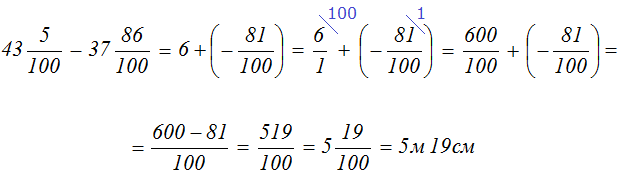
А если сначала перевести смешанные числа в неправильные дроби, то решение можно записать намного короче:
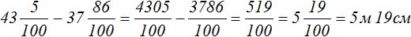
Также можно воспользоваться еще одним методом, которым часто пользуются в школах. Суть метода в том, что с целой части уменьшаемого снимают одну единицу, и представляют ее в виде дроби с таким же знаменателем, как у дробной части уменьшаемого. Затем эту дробь складывают с дробной частью уменьшаемого.
Запишем уменьшаемое
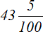
в следующем виде: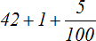
С целой части 43 сняли одну единицу — целая часть теперь представляет собой сумму чисел 42 и 1. Теперь единицу представляем в виде дроби с таким же знаменателем, как и у дроби \(\frac{5}{100}\)
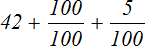
Теперь складываем дроби
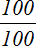
и \(\frac{5}{100}\) — получаем следующее выражение:Уменьшаемое, которое было раньше теперь приняло вид . Мы видим, что проблема уменьшаемого исчезла — оно больше вычитаемого. Это позволяет нам вычислить целые и дробные части по отдельности и получить короткое решение:
При решении столь простых задач, вовсе необязательно прибегать к дробям и тем более к таким способам, которые мы сейчас рассматриваем. Ваша цель — уметь применить полученные знания на практике.
Задача 17. Найти значение следующего выражения:
Решение
Задача 18. Найти значение следующего выражения:
Решение:
Задача 19. Выполнить сложение:
Решение
Получили 1325 минут. Выразим этот ответ в часах и минутах. Для этого «вытащим» часы из 1325.
60 минут это один час. А чтобы понять сколько таких 60 минут (часов) содержится в 1325 минутах, нужно 1325 разделить на 60
Получаем ответ, что 1325 минут это 22 часа и 5 минут
Задача 18. Первый в мире советский искусственный спутник Земли имел массу 83 кг 600 г. Масса второго искусственного спутника была на 424 кг 700 г. больше массы первого и на 818 кг 700 г меньше массы третьего искусственного спутника Земли. Определить массу третьего искусственного спутника Земли.
Решение
Найдем массу второго спутника. Она больше массы первого спутника на 424 кг 700 г. Прибавим к массе первого спутника еще 424 кг и 700 граммов
Далее сказано, что масса второго спутника меньше на 818 кг и 700 граммов. Если к массе второго спутника прибавить 818 кг и 700 граммов, мы получим массу третьего спутника
Значит третий искусственный спутник имеет массу 1327 килограмм.
Задачи для самостоятельного решения
Показать решение
Решение
Определим сколько ведер воды было в двух бочках изначально. Для этого сложим остатки воды в обоих бочках (34) и (20) плюс 16 ведер, которые взяли из них:
34 + 20 + 16 = 70 ведер воды было изначально в обоих бочках.
Поскольку бочки одинаковые, мы можем разделим 70 на 2 и узнать сколько ведер было в каждой бочке по отдельности:
70 : 2 = 35 ведер было в каждой бочке
В первой бочке осталось 34 ведра. Вычтем из 35 ведер 34 ведра — узнаем сколько ведер взяли из первой бочки:
35 − 34 = 1 ведро взяли из первой бочки
Во второй бочке осталось 20 ведер. Вычтем из 35 ведер 20 ведер — узнаем сколько ведер взяли из второй бочки:
35 − 20 = 15 ведер взяли из второй бочки
В условии задачи сказано, что в одно ведро вмещается 9 литров. Умножив 9 литров на количество взятых ведер, мы узнаем сколько литров воды было взято из каждой бочки
9 × 1 = 9 литров воды взяли из первой бочки
9 × 15 = 135 литров воды взяли из второй бочки
Ответ: из первой бочки взяли 9 литров воды, из второй — 135 литров.
Показать решение
Решение
Определим сколько семян дает в год одно растение дикой редьки. Для этого разделим 180000 на 15:
180 000 : 15 = 12 000 семян дает одно растение.
Если одно растение дает 12000 семян, то 80 растений дадут в восемьдесят раз больше. Чтобы узнать сколько именно, нужно 12000 умножить на 80:
12 000 × 80 = 960 000 семян дадут 80 растений
Ответ: 80 растений дикой редьки дадут 960 000 семян.
Показать решение
Решение
Определим сколько рублей было заплачено за яблоки. Для этого умножим 0,6 на количество килограмм, то есть на 5:
0,6 × 5 = 3 рубля стоят яблоки.
Вычтем эти 3 рубля из общей суммы заплаченных денег (6,8р). Так мы узнаем сколько рублей было заплачено за сахар:
6,8 − 3 = 3,8 рублей заплачено за сахар.
Узнаем сколько стоит килограмм сахара. Для этого 3,8 рублей разделим на количество килограмм, то есть на 4
3,8 : 4 = 0,95 рублей стоит килограмм сахара
Ответ: 1 кг сахара стоит 0,95 рублей.
Показать решение
Решение
Если по очереди разделить 3240 на количество дней (на 12, 15 и 20), можно узнать сколько книг в день может переплести каждая мастерская. Затем можно сложить эти результаты и узнать сколько книг переплетут 3 мастерские в день, работая одновременно. А разделив 3240 книг на количество книг, переплетенных тремя мастерскими в один день, можно узнать за сколько дней они выполнят заказ, работая одновременно:
3240 : 12 = 270 (книг) в день выполняет 1 мастерская
3240 : 15 = 216 (книг) в день выполняет 2 мастерская
3240 : 20 = 162 (книги) в день выполняет 3 мастерская
270 + 216 + 162 = 648 (книг) в день выполнят 3 мастерские одновременно
3240 : 648 = 5 (дней) понадобится мастерским чтобы переплести все книги.
Ответ: 5 дней понадобится трём мастерским, чтобы переплести все книги.
Показать решение
Решение
Определим сколько денег хозяйка заплатила за 4,5 кг крупы. Для этого умножим 12,8 рублей на 4,5
12,8 × 4,5 = 57,6 рублей заплачено за 4,5 кг крупы
Сделаем крупу дороже на 3,2 рубля:
12,8 + 3,2 = 16 рублей.
Узнаем сколько крупы можно купить на 57,6 рублей. Для этого разделим 57,6 рублей на цену за килограмм, то есть на 16
57,6 : 16 = 3,6 килограмм
Ответ: 3,6 кг крупы по цене 16 р за килограмм можно купить на 57,6 рублей.
Показать решение
Решение
Определим сколько часов работал каждый маляр:
7 × 6 = 42 часа работал первый маляр.
6 × 5 = 30 часов работал второй маляр.
Определим сколько часов красились рамы:
42 + 30 = 72 часа общее время покраски рам.
Определим сколько рам красится за 1 ч. Для этого общее количество покрашенных рам (144) разделим на общее время их покраски (72)
144 : 72 = 2 рамы красится за один час.
Определим сколько рам покрасил первый маляр:
2 × 42 = 84 рамы покрасил первый маляр.
Определим сколько рам покрасил второй маляр:
2 × 30 = 60 рам покрасил второй маляр.
Ответ: первый маляр покрасил 84 рамы. Второй маляр — 60 рам.
Показать решение
Решение
Определим общее количество лотков:
10 + 14 = 24 лотка
Определим сколько единиц хлеба приходится на один лоток. Для этого общее количество единиц хлеба (288) разделим на общее количество лотков (24)
288 : 24 = 12 единиц хлеба приходится на один лоток.
По условию задачи количество единиц хлеба на лотках одинаковое. Определим сколько буханок чёрного хлеба привезли в хлебный отдел:
12 × 10 = 120 буханок чёрного хлеба привезли в отдел.
Определим сколько батонов белого хлеба привезли в хлебный отдел:
12 × 14 = 168 батонов белого хлеба привезли в хлебный отдел.
Ответ: в хлебный отдел привезли 120 буханок чёрного хлеба и 168 батонов белого.
Показать решение
Решение
Разница между 7 м и 4 м составляет 3 м. На эти 3 м приходятся 450 р. указанные в задаче. Определим сколько рублей приходится на 1 м шёлка. Для этого 450 р. разделим на 3
450 : 3 = 150 р. — стоимость 1 м шёлка.
Ответ: стоимость 1 м шёлка составляет 150 р.
Показать решение
Решение
Разницу между пятью и тремя банками составляют две банки. На эти две банки приходится 2210 г. Определим сколько грамм приходится на одну банку. Для этого 2210 г разделим на 2
2210 : 2 = 1105 г — масса одной банки.
Определим сколько в шкафу пшена. Для этого 1105 г умножим на количество банок с пшеном:
1105 × 5 = 5525 грамм пшена в шкафу.
Определим сколько в шкафу гороха. Для этого 1105 г умножим на количество банок с горохом:
1105 × 3 = 3315 грамм гороха в шкафу.
Ответ: в шкафу 5525 г пшена и 3315 г гороха.
Показать решение
Решение
Определим сколько килограммов муки было получено с 6360 кг пшеницы. Для этого из 6360 кг пшеницы вычтем 860 кг отходов:
6360 − 860 = 5500 кг муки было получено.
Определим количество мешков в которые была насыпана мука:
28 + 32 + 40 = 100 мешков.
Определим массу одного мешка. Для этого 5500 кг муки разделим на количество мешков:
5500 : 100 = 55 кг — масса одного мешка.
Определим сколько килограммов муки погрузили на каждую машину:
55 × 28 = 1540 кг погрузили на первую машину.
55 × 32 = 1760 кг погрузили на вторую машину.
55 × 40 = 2200 кг погрузили на третью машину.
Ответ: на первую машину погрузили 1540 кг муки, на вторую — 1760 кг, а на третью — 2200 кг.
Список сокращений
В задачах часто приводятся различные сокращения для больших чисел. Взамен нулей могут употребляться сокращения тыс. млн, млрд.
Пример 1. Вместо записи 1000 используется сокращение 1 тыс.
Пример 2. Вместо записи 2000 используется запись 2 тыс.
Пример 3. Вместо записи 1000000 используется запись 1 млн.
Пример 4. Вместо записи 1000000000 используется запись 1 млрд.
Сокращения тыс., млн, млрд заменяют собой множители 1000, 1000000, 1000000000 соответственно. Чтобы записать число полностью без сокращений, достаточно умножить его на соответствующий множитель.
К примеру, если на письме указано число 5,5 тыс., то для его полного написания нужно умножить его на 1000
\[5,5 \times 1000 = 5500\]
Пример 2. Записать число 1500 тыс. без сокращения
Сокращение тыс. указывает нам на множитель 1000. Умножим на него 1500
\[1500 \times 1000 = 1 500 000\]
Пример 3. Записать число 1500,5 тыс. без сокращения
\[1500,5 \times 1000 = 1 500 500\]
Пример 4. Записать число 11,2 тыс. без сокращения
\[11,2 \times 1000 = 11 200\]
Пример 5. Записать 1,5 млн без сокращения
Сокращение млн указывает нам на множитель 1000000. Умножим на него 1,5
\[1,5 \times 1000000 = 1500000\]
Пример 6. Зарплата отца составляет 32,7 тыс. руб., зарплаты матери — 28,2 тыс. руб. Записать эти числа без сокращений.
32,7 × 1000 = 32700 рублей
28,2 × 1000 = 28200 рублей
Полезно также обратить внимание на то, что сокращение тыс. употребляется с точкой на конце. Остальные же сокращения (млн, млрд, трлн) употребляются без точки.
Понравился урок?
Вступай в нашу новую группу Вконтакте и начни получать уведомления о новых уроках